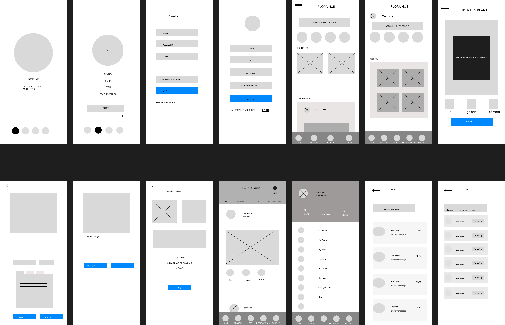

Why this round of testing happened, who took part, and how it was run.
By the end of the design-refinement phase, Flora Hub's mid-fidelity prototype had grown to 10 core screens. Before investing further design time in secondary flows — messaging, notifications, account settings — the team needed evidence that first-time users could complete the four actions the product depends on most, entirely on their own. Real users will never have a moderator sitting next to them either, so this round deliberately removed the facilitator to see how the design held up under realistic conditions.
The four actions under test, in priority order: identify a plant, read its care recommendations, get guided toward the community feed, and feel nudged to create an account or log in. Lower-priority screens (messages, contacts, account settings) were deliberately excluded from this round.
5 participants, a mix of plant hobbyists and complete beginners, ages 24–52, across four Brazilian cities. Tech comfort ranged from high (daily app users) to low (first time downloading a plant-related app). None had seen Flora Hub before this session.
Five participants, recruited to mirror both survey segments from earlier research: people who already care for plants and people who don't yet, but are curious.
Flora Hub's prototype spans 14 screens end to end, but not all of them carry equal weight. To keep this round focused, the 10 screens that matter most to a first-time, unauthenticated user were ranked into three tiers — messaging and account settings were pushed to a later round on purpose.
| Screen | Priority | Why |
|---|---|---|
| Identify a plant (camera capture) | P0 · Must work | The single action the whole product is built around. |
| Identification result & recommendations | P0 · Must work | Where users decide whether the app's advice is worth trusting. |
| Home feed (logged out) | P0 · Must work | Where every unauthenticated session lands and the login nudge lives. |
| Login | P0 · Must work | Required to save results and unlock the full experience. |
| Register | P0 · Must work | The main conversion goal for a first-time visitor. |
| Community / news feed | P1 · Important | Reinforces trust and keeps users engaged after their first result. |
| Onboarding / welcome | P1 · Important | Sets expectations before the camera flow, but is skippable. |
| Home feed (logged in) | P1 · Important | Only relevant once conversion has already happened. |
| Messages / inbox | P2 · Later | Not needed to prove the core value loop; deferred to a future round. |
| Profile & account settings | P2 · Later | Same reasoning — useful, but not on the path to first value. |
The task script below was built to exercise every P0 screen and check whether the P1 community feed gets reached naturally along the way. See the full wireframe set that the prototype was built from.

Each participant received this script by message, opened the prototype link on their own, and worked through it alone with think-aloud audio recording — no interviewer present, no hints given.
"Imagine you're out and you spot a houseplant you don't recognize. Talk through what you're thinking as you go, and try each step yourself before giving up."
Success is marked when a participant completed the task unaided, without backtracking to ask "what do I do now?" out loud more than once.
| Participant | 1. Identify | 2. Healthy plant | 3. Unhealthy plant | 4. Reach the feed | 5. Save / sign up |
|---|---|---|---|---|---|
| P1 · Marina | ✓ | ✓ | ✓ | ✓ | ✓ |
| P2 · Diego | ✓ | ✓ | ✗ | ✗ | ✓ |
| P3 · Aline | ✓ | ✓ | ✓ | ✓ | ✗ |
| P4 · Carlos | ✓ | ✓ | ✓ | ✗ | ✗ |
| P5 · Sofia | ✓ | ✓ | ✓ | ✓ | ✓ |
| Success rate | 5/5 · 100% | 5/5 · 100% | 4/5 · 80% | 3/5 · 60% | 3/5 · 60% |
Four patterns that emerged across all five unmoderated sessions.
"It's just like taking a photo for a plant-ID app I've used before, I knew right away."P5 · Sofia
"I almost pressed the wrong icon, but I saw 'Identify' at the bottom and got it."P4 · Carlos
"This one just says 'keep doing what you're doing,' but the other one told me exactly what was wrong with the leaves — that's helpful."P3 · Aline
"Honestly they looked kind of the same to me, I wasn't sure which one was supposed to be sick."P2 · Diego
"I got my answer, so I just closed it — I didn't think there was anything else to check."P4 · Carlos
"I saw 'see more in the feed' but it looked like an ad, so I skipped it at first."P2 · Diego
"I'd sign up, but let me look around a little more before typing my email."P3 · Aline
"Where's the button to just use Google? I don't want to make a new password."P4 · Carlos
What the four themes mean for the next iteration of Flora Hub.
The priority-screen strategy is validated — 100% of participants completed the two highest-priority actions, identify and view recommendations, with zero moderator support.
Differentiated guidance needs a clearer visual signal — the healthy/unhealthy distinction currently relies on reading body copy alone.
The recommendation screen reads as an endpoint. Without an explicit next step, most participants have no reason to continue into the feed.
Account-creation friction is uneven — sign-up works for confident users but stalls for those wanting a Google shortcut or more time browsing first.
Add a visual severity indicator — an icon and color, not just copy — to the recommendation card, so healthy vs. at-risk is obvious before reading a word.Addresses Theme #2
Replace the plain "see more in the feed" text link with a content-preview card directly under the recommendation, so continuing into the feed feels like more of what the user just asked for, not an ad.Addresses Theme #3
Give every unauthenticated screen a one-tap Google sign-in option (already present on Login, missing on Register), and add a lightweight "save for later" affordance that doesn't force immediate account creation.Addresses Theme #4
Thanks for reading the Flora Hub usability study research presentation. I'd love to hear your feedback or talk more about the project.
Pedro Canuto · data.canuto@gmail.com